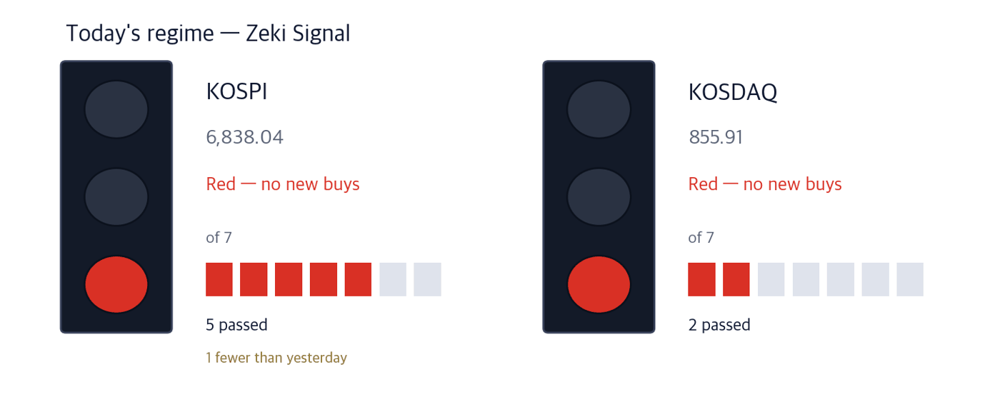

KOSPI 6,971.35 +1.95% | KOSDAQ 894.29 +4.48% | Zeki Signal Yellow |

Green favours buying, yellow says wait, red says hold off. The cells count how many of seven conditions are met - more cells mean the advance is broader. On the October 1 close the KOSPI meets 6 of 7 and shows Yellow. The KOSDAQ meets 2 and shows Red. The KOSPI has 1 more than yesterday.
Wait — the stance the signal implies.
The KOSPI rebounded after three down days, rising 1.95% on October 1 to close at 6,971.35. The KOSDAQ jumped 4.48% to 894.29.
Two pieces of overnight US news set it off: August consumer prices came in below forecasts, and Micron reported a record quarter; its shares rose almost 1% after the New York close (Investor's Business Daily, Sept 30). By sector, semiconductors and pharma-biotech led, and within chips the parts and equipment makers rose more than the large caps.
Foreigners sold on the main board for a fifth day (KRW 548.5 billion) but bought KRW 227.8 billion on the KOSDAQ, where institutions bought KRW 568.1 billion (Korea Economic Daily, Oct 2).
Here is what to do now, before the Friday open in Seoul.
① In chips, parts and equipment makers moved before the giants. Samsung Electronics rose 2.8% and SK hynix 3.2% on October 1. Daeduck Electronics rose 12.75% and Samwha Capacitor 6.37%. Lead times for a key chip-substrate material are now more than four times normal.
② Data-centre cooling is becoming an export line. LG Electronics will build a chiller plant in Virginia, and Otec Carrier's cooling unit has passed Nvidia's qualification. Foreigners and institutions both bought LG Electronics.
③ Today is the last session before a three-day break. Seoul closes October 3 (National Foundation Day) and October 5 (substitute holiday) and reopens October 6. The US September jobs report lands in between. First, watch whether October 1's gainers hold into the close.
The one number is September exports of $120 billion, a record for a single month, led by semiconductors - about KRW 7.6 trillion of chips shipped each day. Meanwhile the US 10-year Treasury yield touched 5.34% intraday on October 1, its highest in 24 years (Maeil Business, Korea Economic Daily, Oct 2).
| Date | What to watch | What it changes |
|---|---|---|
| Oct 2 (Fri) | Last session before a three-day break | Selling to cut exposure to US moves over the break may appear |
| Oct 2 (Fri) night | US September jobs report (21:30 Seoul time) | Moves rates and the dollar; the result arrives all at once at the October 6 open |
| Oct 6 (Tue) | First session after the break | Three days of US trading are priced in |
Micron said memory supply will be even tighter through its fiscal 2028, that long-term supply agreements have risen from 25% to 35% of revenue, and that next year's HBM output is already sold (Korea Economic Daily, Maeil Business, Oct 2).
The shortage is sharper in parts. According to market researcher TrendForce, lead times for ABF, a chip-package substrate material, are 48-56 weeks - more than four times the usual 12. Over the past month, while Samsung Electronics rose 3.5%, Hana Micron gained 43%, Samwha Capacitor 41% and Daeduck Electronics 32%.
| Close | Day | Week | 20 sessions |
|---|---|---|---|
| KRW 158,700 | +6.37% | +7.67% | +41.07% |
| 3 months | Zeki Strength | From 1-yr high |
|---|---|---|
| +5.10% | 97 | -19.36% |
| Who | Samwha Capacitor, a maker of multilayer ceramic capacitors (MLCCs) and other electronic parts. |
| What | Rose 6.37% on October 1 to KRW 158,700, on volume 1.47 times its 50-day average. |
| When | October 1, the first session of the fourth quarter. |
| Where | Listed on the KOSPI; average daily turnover is about KRW 152.2 billion. |
| Why | Because every server and device needs capacitors, so memory expansion turns into parts orders. |
| How | Micron said it will raise capital spending, which can keep parts demand going for longer. |
| Close | Day | Week | 20 sessions |
|---|---|---|---|
| KRW 149,400 | +12.75% | +33.04% | +33.99% |
| 3 months | Zeki Strength | From 1-yr high |
|---|---|---|
| -2.73% | 95 | -24.55% |
| Who | Daeduck Electronics, a maker of chip-package substrates. |
| What | Rose 12.75% on October 1 to KRW 149,400, the biggest gain among today's names. |
| When | October 1, the first session after Micron's results. |
| Where | Listed on the KOSPI; average daily turnover is about KRW 118.4 billion. |
| Why | Because substrate-material lead times are more than four times normal, making substrates the tightest link. |
| How | It rose on volume 1.98 times its 50-day average. |
LG Electronics will build a chiller plant in Windsor, Virginia. A chiller is a large unit that makes chilled water for a whole building. Output is planned for the first half of next year, and with expansions at Pyeongtaek and Changwon the spend is KRW 150 billion (Maeil Business, Oct 2).
The same day Otec Carrier said its coolant distribution unit had passed Nvidia's qualification (Korea Economic Daily, Oct 2). Market researcher Omdia expects global data-centre power capacity to grow from 226GW this year to 420GW in 2030, about 60% of it in North America.
| Close | Day | Week | 20 sessions |
|---|---|---|---|
| KRW 211,500 | -0.47% | -2.31% | +2.42% |
| 3 months | Zeki Strength | From 1-yr high |
|---|---|---|
| +4.19% | 91 | -51.71% |
| Who | LG Electronics, a maker of appliances and heating-cooling systems. |
| What | It is building an air-cooled chiller plant for data centres in the US and adding lines at home. |
| When | Announced October 1; the US plant targets output in the first half of next year. |
| Where | Windsor, Virginia, where big tech data centres cluster. |
| Why | Because every new data centre needs equipment to remove its heat. |
| How | It sells the full chain, from chillers that make cold water to plates that sit on the chip. |
Korea's trade ministry announced a Korea-US nuclear framework on October 1: eight large reactors in the US with up to $120 billion. Two will be Korea's APR1400 - the first foreign design to be built on US soil (Korea Economic Daily, Maeil Business, Oct 2).
Construction is budgeted at $25 billion per pair. The agreement also provides for Korean private companies to buy 5-10% of Westinghouse. Sites such as Ohio and Tennessee are mentioned but not yet chosen.
| Close | Day | Week | 20 sessions |
|---|---|---|---|
| KRW 82,100 | +0.61% | -5.09% | +0.86% |
| 3 months | Zeki Strength | From 1-yr high |
|---|---|---|
| -5.41% | 48 | -41.02% |
| Who | Doosan Enerbility, a maker of reactors and power equipment. |
| What | Barron's named it a key supplier of reactor pressure vessels; it also won a KRW 840 billion gas power plant in Vietnam. |
| When | The nuclear framework was announced October 1; sites come later. |
| Where | Listed on the KOSPI; the US sites are not yet chosen. |
| Why | Because it can also supply key equipment to the Texas gas plant Korea chose as its first project. |
| How | Rose 0.61% on October 1 to KRW 82,100, on thin volume of 0.84 times its 50-day average. |
Rebar maker Daehan Steel rose 16.82% on October 1 to KRW 9,100, and Kiswire 5.02%. US AI data-centre construction lifted August steel exports to the US by 145.5% from a year earlier.
But both sit below zero on the trend gauge (-0.48% and -1.72% of price), and cheap Chinese steel sheet keeps arriving in Korea (Maeil Business, Korea Economic Daily, Oct 2). We will take them up once a one-day jump turns into a trend.
| Name | ①up 20d | ②Str. 90+ | ③For. buy | ④Inst. buy | Met | Weight |
|---|---|---|---|---|---|---|
| Samwha Capacitor (001820) | O | O | O | O | 4/4 | Well grounded |
| Daeduck Electronics (353200) | O | O | O | X | 3/4 | Grounded |
| LG Electronics (066570) | O | O | O | O | 4/4 | Well grounded |
| Doosan Enerbility (034020) | O | X | X | X | 1/4 | Needs checking |
The four columns ask: ① up over 20 sessions? ② Zeki Strength 90 or higher? ③ foreign net buying over 20 sessions? ④ institutional net buying over 20 sessions? The count of O sets the weight of evidence. Of today's 4 names, 4 pass ①, 3 pass ②, 3 pass ③ and 2 pass ④. In chip parts and cooling, price and money arrived together; in nuclear, only the news is ahead.
| Name | Foreign / Inst, 20d | Volume | How to read it |
|---|---|---|---|
| SFASemicon 036540 | F +14.6 · I -4.8 | 1.69x | Caution — Only foreigners bought; institutions sold |
| Posco International 047050 | F -1.8 · I +18.4 | 0.38x | Caution — Only institutions bought; foreigners sold |
| POSCO DX 022100 | F -0.9 · I +9.8 | 0.25x | Caution — Only institutions bought; foreigners sold |
| Korean Air Lines 003490 | F +8.9 · I +2.9 | 0.99x | Check✓ — Both bought, but on thin volume |
| Woori Financial Group 316140 | F +32.8 · I +2.6 | 0.93x | Check✓ — Both bought, but on thin volume |
| Daewoo Engineering & Construction 047040 | F -5.1 · I -2.8 | 1.27x | Caution — Both sides selling as volume rises |
| Samsung Electronics 005930 | F -19.5 · I +12.0 | 0.71x | Caution — Only institutions bought; foreigners sold |
| Doosan Enerbility 034020 | F -7.2 · I -0.6 | 0.88x | Wait — Both sides selling, but volume has dried up |
| LG Display 034220 | F -9.0 · I -0.7 | 0.67x | Wait — Both sides selling, but volume has dried up |
| Netmarble 251270 | F -11.2 · I -0.2 | 0.36x | Wait — Both sides selling, but volume has dried up |
| Stock | Net shares, 20 days | Zeki Strength | 20 trading days | As of |
|---|---|---|---|---|
| Woori Financial Group 316140 | +32,750,210 | 66 | -3.8% | 10-01 |
| SFASemicon 036540 | +14,581,038 | 94 | +87.7% | 10-01 |
| Korean Air Lines 003490 | +8,919,885 | 74 | +8.5% | 10-01 |
| Koh Young 098460 | +3,496,834 | 80 | +21.4% | 10-01 |
| HYUNDAI MOVEX 319400 | +2,258,939 | 74 | -9.4% | 10-01 |
| Stock | Net shares, 20 days | Zeki Strength | 20 trading days | As of |
|---|---|---|---|---|
| Samsung Electronics 005930 | -19,460,491 | 92 | +5.7% | 10-01 |
| Netmarble 251270 | -11,181,305 | 11 | -10.1% | 10-01 |
| LG Display 034220 | -8,982,290 | 8 | -7.5% | 10-01 |
| Hanon Systems 018880 | -8,101,158 | 51 | +3.8% | 10-01 |
| Doosan Enerbility 034020 | -7,165,136 | 48 | +0.9% | 10-01 |
| Stock | Net shares, 20 days | Zeki Strength | 20 trading days | As of |
|---|---|---|---|---|
| Posco International 047050 | +18,384,472 | 53 | +0.0% | 10-01 |
| Samsung Electronics 005930 | +11,983,544 | 92 | +5.7% | 10-01 |
| POSCO DX 022100 | +9,813,457 | 20 | -5.5% | 10-01 |
| Hanon Systems 018880 | +5,822,065 | 51 | +3.8% | 10-01 |
| Macquarie Korea Infrastructure 088980 | +4,918,321 | 27 | -2.1% | 10-01 |
| Stock | Net shares, 20 days | Zeki Strength | 20 trading days | As of |
|---|---|---|---|---|
| SFASemicon 036540 | -4,813,766 | 94 | +87.7% | 10-01 |
| Daewoo Engineering & Construction 047040 | -2,839,777 | 95 | +5.6% | 10-01 |
| Koh Young 098460 | -2,526,938 | 80 | +21.4% | 10-01 |
| NAVER 035420 | -2,091,200 | 27 | -11.1% | 10-01 |
| Silicon2 257720 | -1,928,024 | 54 | -26.2% | 10-01 |
Even when the story and the price agree, we check the money separately. The table asks whether volume on October 1 actually cleared the bar - its 50-day average.
| Name | Cleared? | Flows (as of) | How to read it |
|---|---|---|---|
| Samwha Capacitor (001820) | 1.47x ✓ | F buy · I buy (10/1) | Watch — Foreigners and institutions both bought, on rising volume |
| Daeduck Electronics (353200) | 1.98x ✓ | F buy · I sell (10/1) | Caution — Only foreigners bought; institutions sold |
| LG Electronics (066570) | 0.45x ✗ | F buy · I buy (10/1) | Check — Both bought, but on thin volume |
| Doosan Enerbility (034020) | 0.84x ✗ | F sell · I sell (10/1) | Wait — Both sides selling, but volume has dried up |
"Cleared?" is volume on October 1 divided by the 50-day average; above 1x earns a ✓.
| Weight of evidence | Names | Beat KOSPI | Winners led by | Losers trailed by | All averaged |
|---|---|---|---|---|---|
| Well grounded | 12 | 9 / 12 | +9.51%p | -4.35%p | +6.04%p |
| Grounded | 15 | 7 / 15 | +6.66%p | -5.53%p | +0.16%p |
| Needs checking | 28 | 8 / 28 | +6.17%p | -4.27%p | -1.29%p |
| Thin | 1 | 1 / 1 | +7.22%p | none | +7.22%p |
| No basis | 2 | 0 / 2 | none | -5.15%p | -5.15%p |
| Excluded | 1 | 1 / 1 | +4.40%p | none | +4.40%p |
| Well grounded 12 | +6.04%p | ||||||
| Grounded 15 | +0.16%p | ||||||
| Needs checking 28 | −1.29%p | ||||||
| Thin 1 | +7.22%p | ||||||
| No basis 2 | −5.15%p | ||||||
| Excluded 1 | +4.40%p |
The centre line is KOSPI. Right is ahead, left is behind. The grey number is how many names are in that band.
Of 12 Well grounded names, 9 beat KOSPI. Those 9 led by 9.5%p on average; the 3 that lost trailed by 4.4%p. All together: +6.0%p.
After 20 sessions (about a month): results first arrive on Oct 14; they are added here as a table as they fill.
After 60 sessions (about three months): results first arrive on Dec 9; they are added here as a table as they fill.
Verdict. Once both markets together reach 60 cases for a window, we run the test fixed in advance and print what it says. 5 sessions, 134 cases — Not shown to beat the index. But higher-grade names did better. (41.8% beat the index) · 20 sessions: 0 of 60 · 60 sessions: 0 of 60
| When | What to watch | What it means |
|---|---|---|
| First 30 minutes (09:00-09:30) | Whether Daeduck Electronics opens above its Oct 1 close of KRW 149,400 | Shows whether profit-taking hits the one-day jump first |
| During the session | Whether foreigners sell on the main board for a sixth day | If the selling stops, the rebound can spread to large caps |
| Last 30 minutes (15:00-15:30) | Whether the KOSPI holds above 6,971.35 | The Oct 1 close; shows whether gains hold into the break |
October 2 is the last session before the break. Check whether chip parts makers hold their October 1 prices and whether foreign selling eases. The US September jobs report comes out that night, and the result arrives all at once at the October 6 open.
This is the Rex Way, ZekiRex™